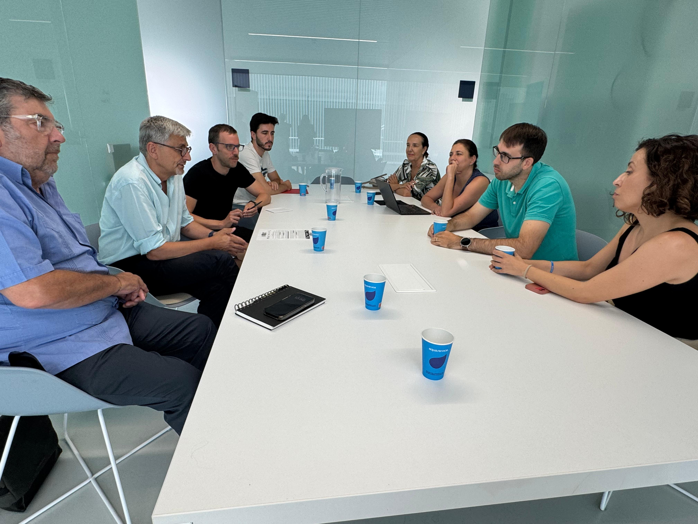
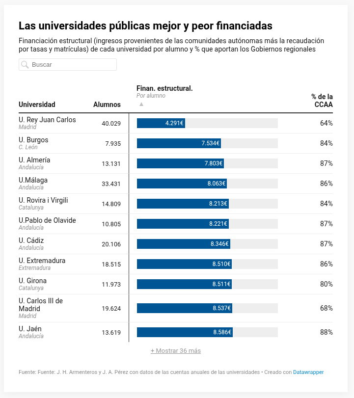

Defendemos la universidad pública, desde dentro.
Miembros de los distintos colectivos de UMA x la Pública se reúnen el 18 de junio con Antonio Maíllo, secretario general de Izquierda Unida.
Maíllo se ha interesado por la situación crítica de la Universidad de Málaga y se ha comprometido a ayudar a UMA x la Pública a exigir al gobierno autonómico una financiación justa para las universidades públicas andaluzas.
El pasado 20 de junio, Francisco García Pascual se reunió con el equipo de dirección de la Universidad de Málaga. Uno de los anuncios destacados fue la decisión de emplear los fondos del programa estatal María Goyri, pensados originalmente para estabilizar y rejuvenecer las plantillas universitarias, en amortizar las plazas de Ayudante Doctor convocadas en 2023 y paralizadas por motivos económicos.
Aunque esta medida se presenta como una solución positiva, supone en realidad una reducción neta de plazas y una renuncia a ampliar la plantilla estructural. UMA x la Pública ha solicitado una reunión con el secretario para trasladar su preocupación ante este uso regresivo de una medida estatal que buscaba precisamente acabar con la precariedad y el envejecimiento de las universidades.
Más información oficial: Nota de prensa de la UMA sobre la reunión con el secretario general de universidades
El 2 de julio, el personal de limpieza protagonizó una sentada en la Facultad de Medicina para exigir la mejora de sus condiciones laborales.
🔗 Ver cobertura en Málaga Hoy
El 2 de julio, El País publica una noticia que refleja el malestar creciente en el sistema público universitario andaluz: las universidades públicas se rebelan contra el apoyo de la Junta a las privadas, tras la pérdida del Grado en Ingeniería Biomédica en los campus de Jaén y Granada.
Los rectores exigen a la Junta “las mismas reglas de juego” para competir en igualdad de condiciones.
🔗 Leer noticia en El País

Miembros de los distintos colectivos de UMA x la Pública se reúnen el 3 de julio con Josele Aguilar, secretario general del PSOE en Málaga y antiguo profesor asociado en Derecho.
Aguilar trasladará la situación económica de la Universidad de Málaga a la Comisión de Universidad, Investigación e Innovación de la Junta de Andalucía.

El 6 de julio, eldiario.es confirma lo que venimos denunciando: la Universidad de Málaga es la cuarta universidad pública peor financiada de España.
🔗 Leer noticia en eldiario.es
El 7 de julio se ha anunciado la convocatoria de una gran movilización ciudadana para mostrar el apoyo masivo a la Universidad de Jaén.
🔗 Leer noticia en Europa Press
UMA x la Pública se va a poner en contacto con otras plataformas de defensa de la universidad pública andaluza para coordinar acciones y fortalecer la defensa del sistema universitario público en toda Andalucía.
El 10 de julio, La Opinión de Málaga publica que los rectores andaluces critican que los 34 nuevos títulos para la privada están «muchos repetidos».
Las universidades públicas rechazan la «estrategia de privatización y mercantilización» que atribuyen al Gobierno andaluz.
🔗 Leer noticia en La Opinión de Málaga
El País publica el 10 de julio la noticia: El doble rasero de la Junta andaluza con las universidades: exige a las públicas lo que ignora con las privadas.
Un informe revela múltiples irregularidades en la concesión del Grado de Ingeniería Biomédica a la Universidad Loyola, de carácter privado.
🔗 Leer noticia en El País
El País publica el 11 de julio: La apertura de dos universidades privadas en Málaga agrava el problema del alojamiento: la mayoría de las habitaciones supera los 500 euros.
Con el precio de la vivienda disparado y la competencia de los pisos turísticos, la búsqueda de un techo es una odisea para los estudiantes.
🔗 Leer noticia en El País
Málaga Hoy publica el 11 de julio: Piden al rector de la UMA que anule encargos a la fundación privada de gestiones administrativas propias de la universidad.
El sindicato SiAM ha exigido a López que dé marcha atrás por ser contrarios a los estatutos de la FGUMA.
🔗 Leer noticia en Málaga Hoy
En septiembre vuelve UMA x la Pública para seguir defendiendo la universidad pública, la financiación justa y las condiciones laborales dignas para todas las personas que la sostienen.
Si quieres participar en la plataforma, puedes dejar tus datos en https://umaxlapublica.github.io/#participa